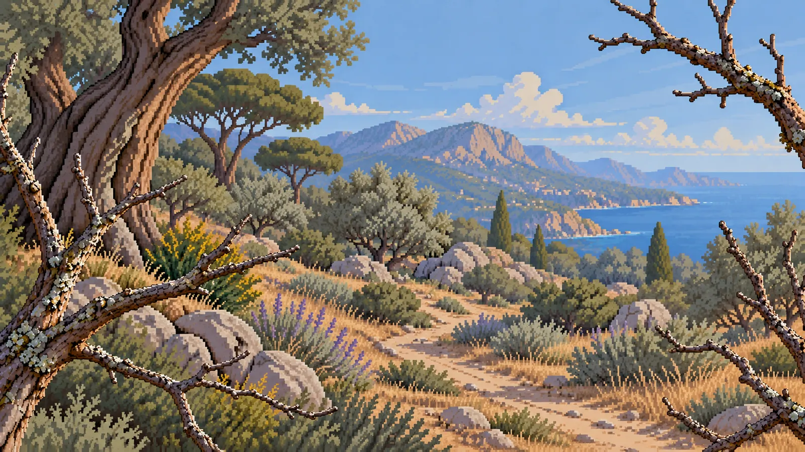
Which animal did the camera capture?
An app to cut down your phone use and learn about nature.
First choose a habitat and set the trap.
Pick the Mediterranean coast or the Amazon rainforest, how long you want to stay off your phone and what you will be doing: studying, reading, working…
Then put the phone down.
The camera trap will be ready. Leave your phone alone and your chances of finding spectacular species go up!
Come back to the recordings.
When you finish, go back to the camera trap and check whether any animals were sighted.
This is a recording from the app. Name the animal, the way you would after a session.
0 of 2 identified
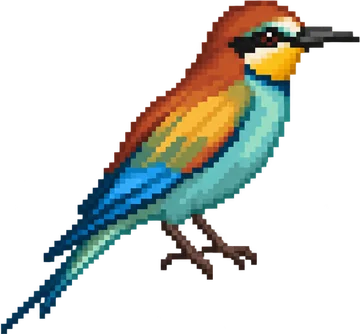
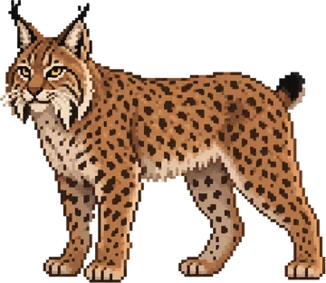
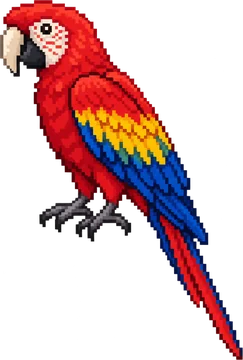
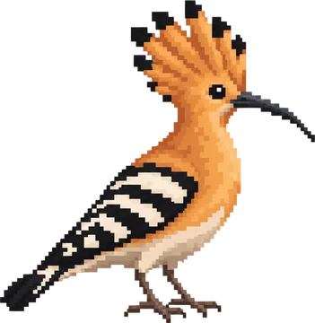
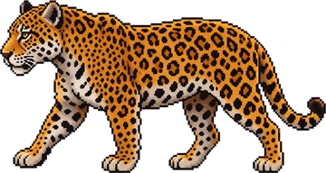
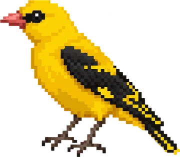
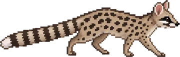
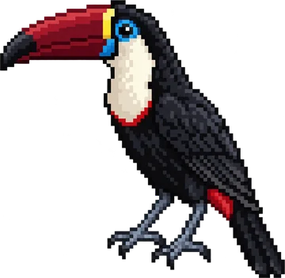
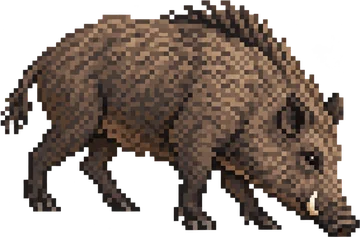
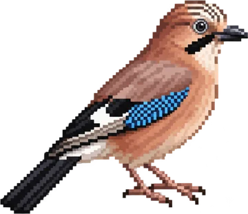
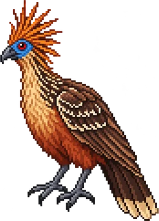
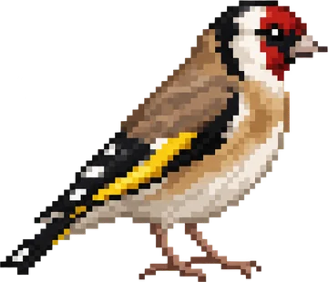
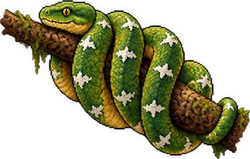
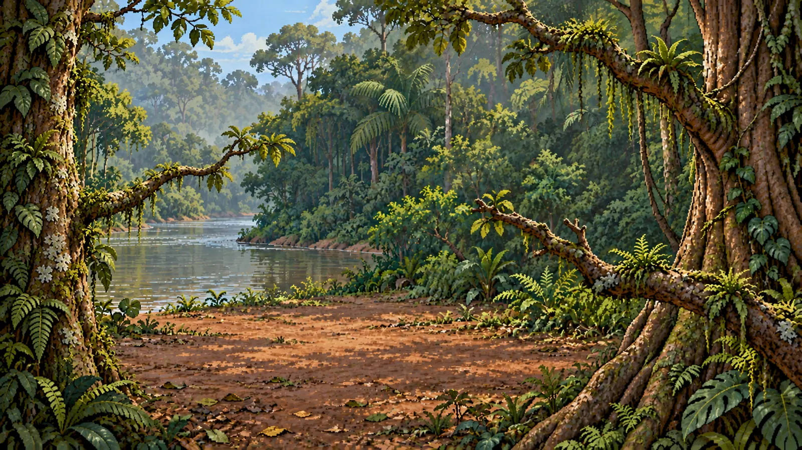
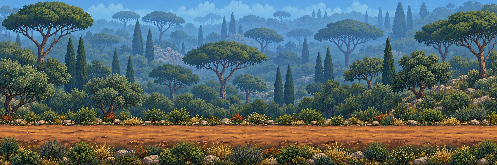
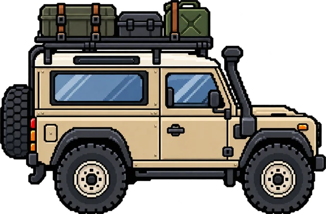
Is the wildlife real? No. Encounters are simulated, and the animal animations were made in advance with AI, so details and sizes can be off. The species, their names and their encyclopedia facts are real.
Will an animal turn up every session? No. As in real nature, some sessions come back empty. Sightings are more likely the longer you stay away from your phone.
Does it block my other apps? No. BirdQuiet never blocks anything, and you can always use your phone in an emergency. Using other apps simply lowers the chance of a sighting.
How does it know I left the phone alone? Basic mode counts time on the focus screen or away from BirdQuiet. Optional full focus uses Android’s usage access, with your permission, to see when the screen was locked and which apps were open. That stays on your phone.
Are there ads or purchases? For now, there are no ads, no accounts and no coins for sale. Coins come only from time spent off your phone.
Does it need an internet connection? No. The main features work offline. Source links in the encyclopedia open in your browser.